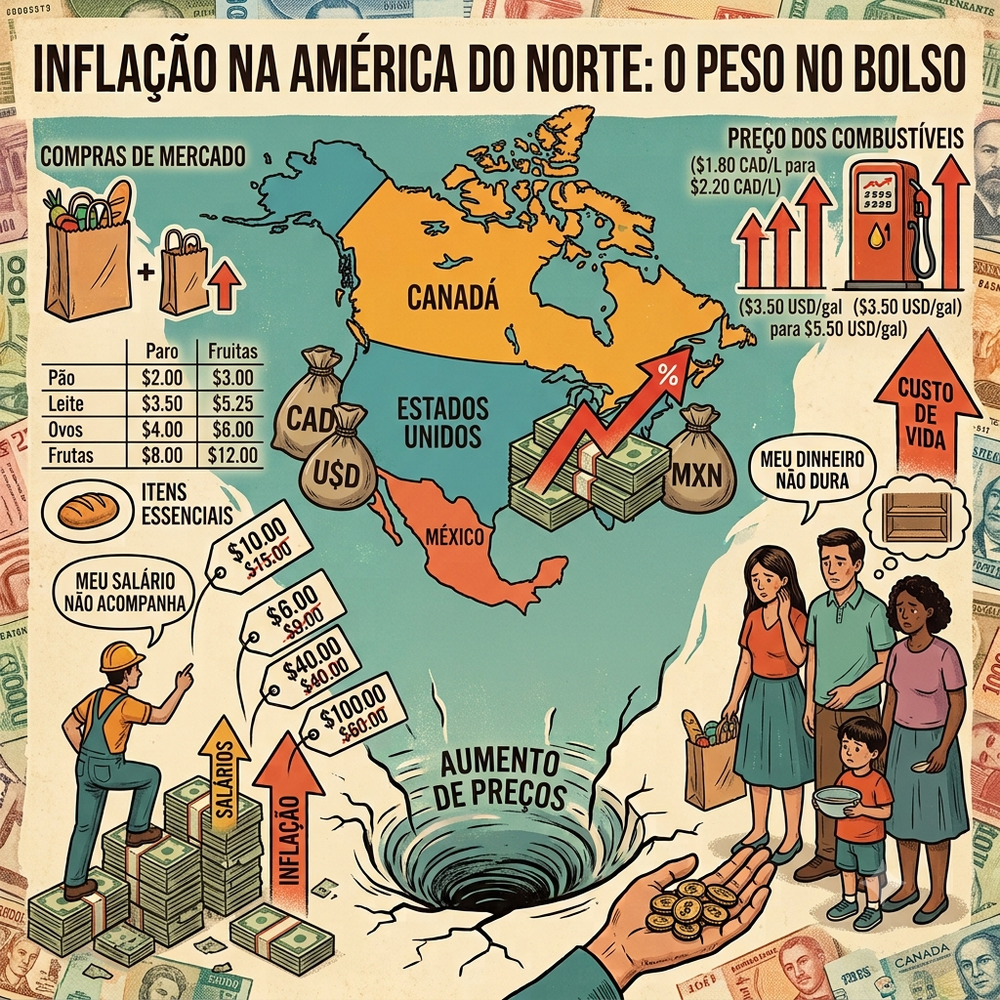
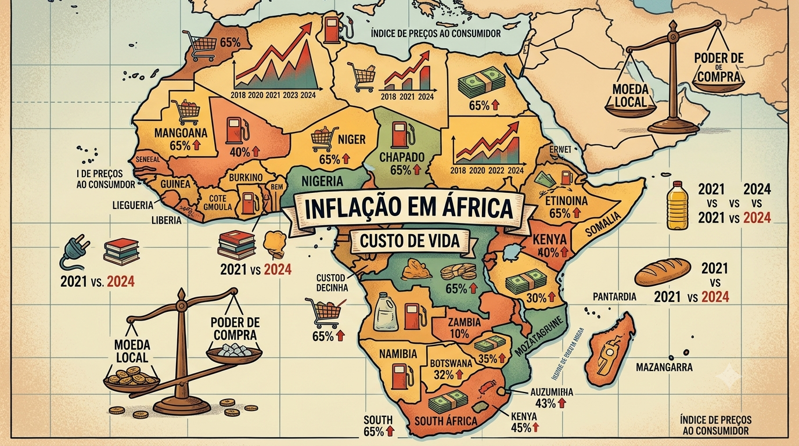
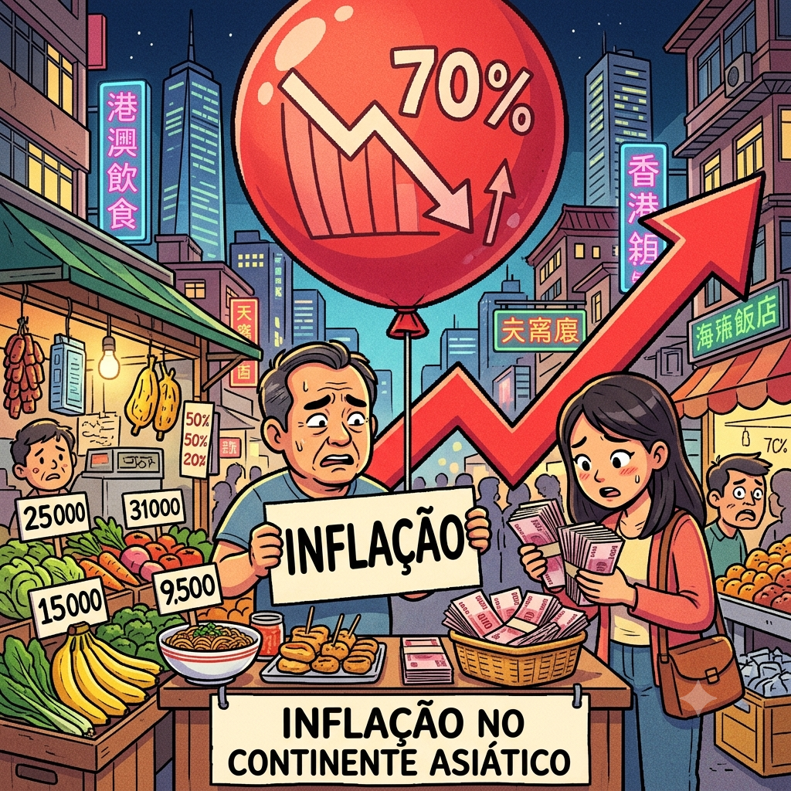

iremos comentar sobre a inflação ao redor do mundo

Inflação América do Norte
Por: Alexandre e Victor
Após os choques na cadeia de suprimentos global e os estímulos financeiros decorrentes da pandemia de Covid-19, a região registrou picos inflacionários históricos entre 2021 e 2022. Nos EUA e no Canadá, o aumento dos preços atingiu patamares que não eram vistos há quatro décadas, impulsionado pela alta dos combustíveis, alimentos e custos de habitação. O México também enfrentou uma forte pressão sobre os preços de produtos básicos, o que impactou severamente o poder de compra da população local.
Inflação América Central
Por: Alexandre e Victor
A inflação na América Central é um fenômeno complexo e multifacetado, profundamente atrelado à forte dependência econômica que a região tem de mercados externos, especialmente dos Estados Unidos. Por ser uma região majoritariamente importadora de combustíveis e alimentos, os países centro-americanos são altamente vulneráveis aos chamados "choques externos" — como crises geopolíticas globais ou gargalos nas cadeias de suprimentos mundiais. Quando o preço do petróleo sobe no mercado internacional, o impacto no custo de transporte e produção local é imediato.
Inflação América do Sul
Por: Alexandre e Victor
A inflação na América do Sul é um desafio econômico histórico e complexo, que afeta os países da região de maneiras muito diferentes. Enquanto algumas nações conseguem manter os índices sob controle com políticas monetárias rígidas, outras enfrentam crises severas, onde a desvalorização da moeda e a alta de preços corroem rapidamente o poder de compra da população.

Inflação no continente Africano
Por: Alexandre e Victor
A inflação no continente africano atingiu níveis críticos nos últimos anos, impulsionada pela alta dos combustíveis, guerras e a desvalorização das moedas locais.
O aumento no preço dos alimentos básicos e da energia corrói diretamente o poder de compra das famílias, tornando o custo de vida insustentável e aprofundando os desafios socioeconômicos da região.

Inflação no continente asiático
Por: Alexandre e Victor
A inflação na Ásia não afeta todos os países da mesma forma. Enquanto potências industriais como a China lidam frequentemente com preços baixos ou risco de deflação, economias emergentes da Índia e do Sudeste Asiático sofrem mais com a alta do custo de alimentos e energia importada. É um continente gigante onde o custo de vida varia entre a cautela do consumo e o peso das commodities globais.
Inflação no continente da oceania
Por: Alexandre e Victor
A Oceania apresenta uma dinâmica econômica única no cenário global. Enquanto Austrália e Nova Zelândia possuem economias avançadas e mercados financeiros maduros, as pequenas nações e territórios insulares do Pacífico (como Fiji, Samoa e Papua-Nova Guiné) operam sob realidades vulneráveis. O avanço da inflação na região reflete a combinação de choques globais e fragilidades locais.
![Infográfico ilustrativo sobre a inflação na América Central, com textos em português. No topo, destaca-se o título Inflação na América Central. O centro mostra uma família empurrando um carrinho de compras cheio de alimentos ladeira acima, simbolizando o Aumento de Custos na Economia. Ao redor, há mapas parciais da região destacando países como Guatemala, Belize, Honduras, Nicarágua e Costa Rica. Gráficos de barras e setas para cima indicam a Taxa de Inflação. À esquerda, uma mão retira moedas de uma carteira, com o texto Perda de Poder de Compra. À direita, uma balança desequilibrada mostra que o Salário pesa menos que uma cesta de alimentos, acompanhada da frase Salários não acompanham os preços. Na base, ícones ilustram as consequências: Redução de Consumo e Preocupação Financeira.](img/sigma da bahia.jpg)

![Uma ilustração vetorial colorida em estilo de carimbo circular, intitulada INFLAÇÃO NA OCEANIA. No centro, um mapa da Oceania (Austrália, Nova Zelândia, e ilhas) é atravessado por uma grande seta laranja ascendente, rotulada CUSTO DE VIDA. A seta mostra o aumento de preços: começando com moedas caindo de uma nuvem chuvosa na base, passando por caixas de importados com cadeados, um carrinho de supermercado rotulado CESTA BÁSICA INFLACIONADA, até uma fábrica e um guindaste no topo, indicando CUSTO DE PRODUÇÃO e DESEMPREGO. Várias tags de preços e símbolos de moeda (AUD$, NZD$, FJD$) flutuam ao longo da seta. Uma nuvem de fumaça preta com um raio flutua acima dos custos. O título INFLAÇÃO NA OCEANIA está em uma faixa na parte superior. A imagem tem um visual de infográfico vibrante, detalhado e texturizado.](img/hahahah.png)